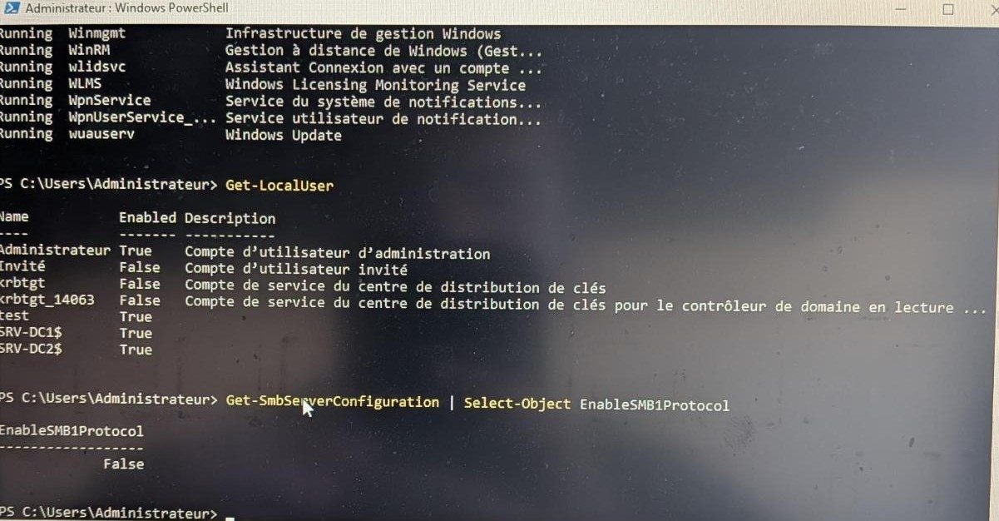
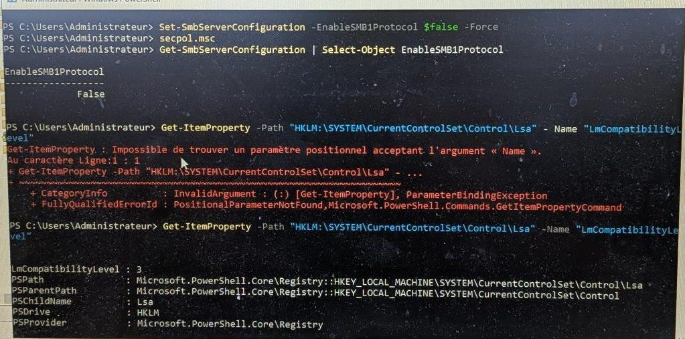
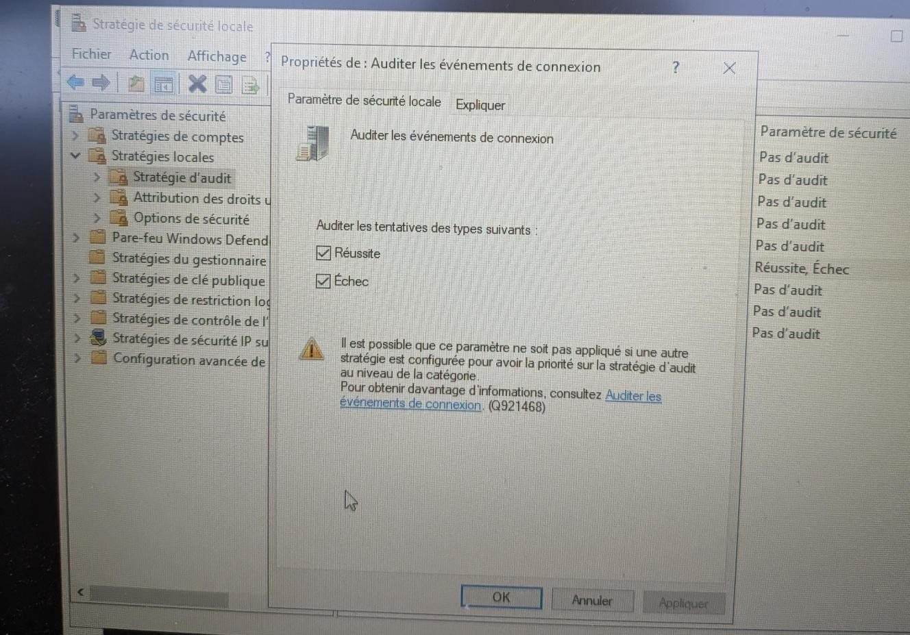
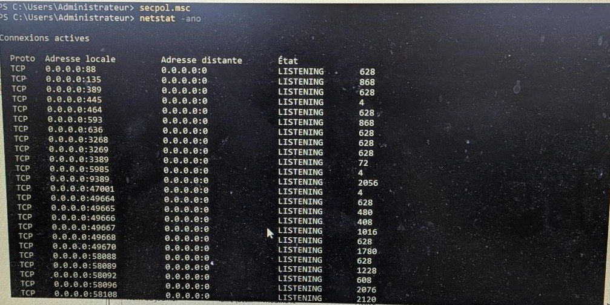

Contexte et démarche
Le poste a été durci sur une VM restaurée à un instantané de départ (« T0 »), avec une règle : ne jamais perdre l'accès à la machine. La démarche :
- Audit initialPorts ouverts (
netstat -ano), services actifs, comptes locaux, configuration SMB. Les comptes Administrateur et Invité étaient actifs par défaut : des cibles faciles pour une attaque par force brute. - DurcissementComptes, stratégie de mots de passe, verrouillage, protocoles obsolètes, résolution de noms, exécution automatique, journalisation.
- Contre-auditMêmes commandes qu'au départ et rapport
gpresult /hpour valider l'application des stratégies.
Avant / après
Basculez entre l'état d'origine du poste et l'état après durcissement.
| Paramètre | Valeur | Pourquoi |
|---|---|---|
| Compte Invité | ActivéDésactivé | Compte sans mot de passe connu de tous |
| Compte administrateur | « Administrateur »Renommé « Admin_Securise » | Les attaques visent les noms de comptes standards |
| Historique des mots de passe | Non défini24 mémorisés | Empêche de réutiliser un ancien mot de passe |
| Durée de vie max. | 42 jours365 jours | Avec des mots de passe longs, on change moins souvent |
| Durée de vie min. | 0 à 1 jour1 jour | Bloque le contournement de l'historique |
| Longueur minimale | 7 caractères14 caractères | La longueur est le premier facteur de robustesse |
| Seuil de verrouillage | Non configuré5 tentatives | Anti force brute (testé : blocage au 6e essai) |
| Durée de verrouillage | Non configurée15 minutes | Ralentit fortement une attaque |
| SMBv1 | DésactivéDésactivé (contrôlé) | Protocole exploité par WannaCry |
| LAN Manager | Non forcéNTLMv2 uniquement | Interdit les anciennes authentifications faibles |
| LLMNR | ActivéDésactivé | Évite l'usurpation de noms sur le réseau local |
| Exécution auto (USB) | ActivéeDésactivée | Bloque l'infection par clé USB |
| Journal de sécurité / audit | Taille par défaut, audit non configuré128 Mo, audit des connexions (succès et échecs) | Garder des traces exploitables |
Commandes clés
PowerShell (administrateur)
# Audit : ports, services actifs, comptes, SMB PS> netstat -ano PS> Get-Service | Where-Object {$_.Status -eq "Running"} PS> Get-LocalUser PS> Get-SmbServerConfiguration | Select-Object EnableSMB1Protocol # Comptes : désactiver Invité, renommer l'administrateur PS> Disable-LocalUser -Name "Invité" PS> Rename-LocalUser -Name "Administrateur" -NewName "Admin_Securise" # Verrouillage : 5 essais, fenêtre et durée de 15 min PS> net accounts /lockoutwindow:15 /lockoutduration:15 /lockoutthreshold:5 # Forcer NTLMv2 (registre) PS> Set-ItemProperty -Path "HKLM:\SYSTEM\CurrentControlSet\Control\Lsa" -Name "LmCompatibilityLevel" -Value 3 # Rapport de validation des stratégies PS> gpresult /h rapport.html
LLMNR, l'exécution automatique et l'audit des connexions ont été réglés dans l'éditeur de stratégie de groupe locale (gpedit.msc).
Captures
Photos d'écran prises pendant le TP.





Bilan
Compétences mobilisées
- Administration Windows en PowerShell
- Stratégies de sécurité locales et registre
- Application d'un référentiel (CIS L1, ANSSI)
- Démarche audit, action, contre-audit
Ce que j'en retiens
- Travailler sur un snapshot permet de tester sans risque.
- Chaque réglage doit répondre à une menace précise, sinon il est difficile à justifier.
- Ces mêmes règles se déploient à grande échelle par GPO dans un domaine Active Directory.